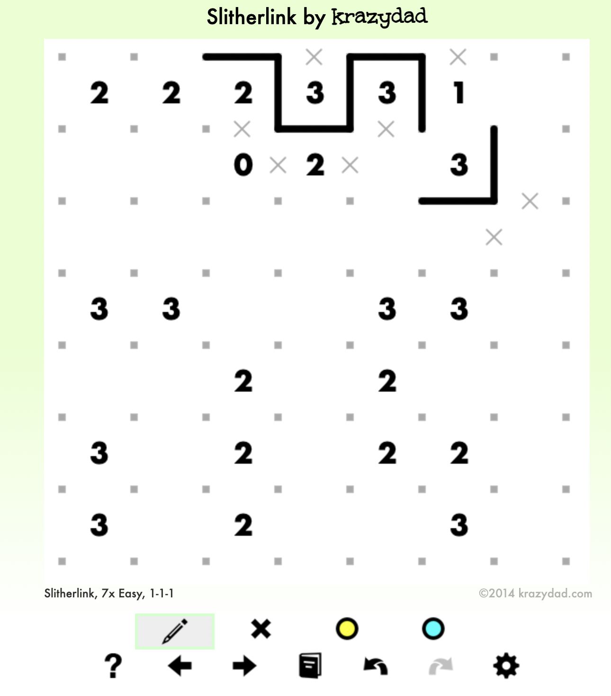
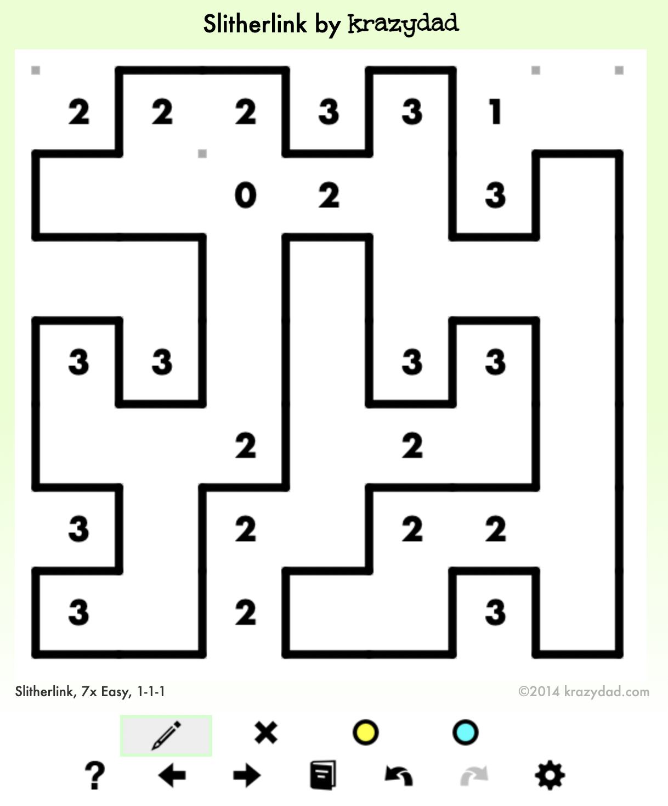
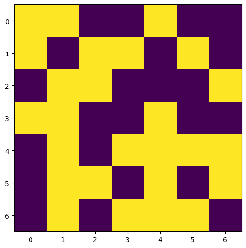
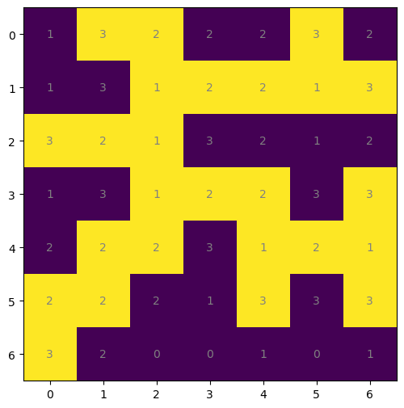

import numpy as np
import matplotlib.pyplot as pltHow to make a Slitherlink level generator
Fun
This is just for fun
How to make a Slitherlink level generator
Slitherlink is a fun logic puzzle played on a grid; a good website to try it is Krazydad, or if you have a tablet I would recommend the Slitherlink app by Conceptis.

Above is an in-progress example of a Slitherlink puzzle.
It has the following rules:
- If there is a number X in a cell, there must be exactly X filled-in edges around the number.
- All the filled-in edges in a puzzle must join together to form a single continuous loop.
A good Slitherlink puzzle comes with the guarantee that there is a unique solution. The above example has the solution:

From the perspective of a Slitherlink generator, every puzzle has two components:
- The solution
- The hints
Given a solution, it is trivial to fill the grid with maximal hints - some process could be used to then remove hints iteratively to increase the difficulty of the puzzle, if desired.
Even without such a process we would still have a valid, if easy, Slitherlink puzzle; thus we should focus on generating a solution first. Instead of trying to generate the loop itself, we can think of the loop as being the boundary between some shape and the outside of the grid.
As a first attempt, we will just generate a completely random ‘shape’. It will probably be disconnected and hence an invalid solution; this is just temporary to test the puzzle rendering.
conda install conda-forge::numpy=1.23.5
conda install conda-forge::matplotlib=3.6.2def random_slitherlink(
shape: "Two element tuple"
) -> "0/1 numpy array with shape `shape`":
return np.random.randint(0, 2, shape)
slither = random_slitherlink((7, 7))
slitherarray([[1, 1, 0, 0, 1, 0, 0],
[1, 0, 1, 1, 0, 1, 0],
[0, 1, 1, 0, 0, 0, 1],
[1, 1, 0, 0, 1, 0, 0],
[0, 1, 0, 1, 1, 1, 1],
[0, 1, 1, 0, 1, 0, 1],
[0, 1, 0, 1, 1, 1, 0]])def display_slitherlink_solution(
grid: "0/1 numpy array"
) -> "(fig, ax) tuple for plotted figure":
fig, ax = plt.subplots(figsize=(6, 6))
ax.imshow(grid)
return (fig, ax)
display_slitherlink_solution(slither)
pass
Creating a good solution turns out to be a bit difficult, and I made some false starts. Sam had the good idea of including false pathways in his blog as expandable dropdowns, which I will steal. This way, people can still follow my thought process if desired, but false pathways do not distract from the flow of the true solution.
Attempt 1: Painting lines
My first idea was to choose a random cell, and draw a straight line at a random distance from it. Then, iteratively pick a random inside cell and create a new straight line (making sure to never intersect with an already created line).
I didn’t quite finish the code for it (still some bugs - it’s possible for it to cut the outside into multiple parts diagonally), but I abandoned the path because I wasn’t happy with it - I had the idea for my next attempt, based on surface area, since I think it would be more elegant.
def random_slitherlink(
shape: "Two element tuple",
iters: int = 5
) -> "Boolean numpy array with shape `shape`":
# Initialize
slither = np.zeros(shape).astype(bool)
# Maybe transpose it
transposed = np.random.randint(2)
if transposed:
slither = slither.T
# Pick a random column to slither from
slither[
:np.random.randint(1, slither.shape[0]),
np.random.randint(slither.shape[1])
] = True
# Maybe flip it
if np.random.randint(2):
slither = slither[::-1]
# Un-transpose it to preserve shape
if transposed:
slither = slither.T
# Iteratively add slithers
for i in range(iters):
# Choose cell to expand
choice = (
np.random.choice(
np.argwhere(slither.reshape(-1))[:, 0]
)
)
row = choice // shape[1]
col = choice % shape[1]
# Always expand in the direction with the most space
column_slithers = np.argwhere(slither[row]).reshape(-1) - col
row_slithers = np.argwhere(slither[:, col]).reshape(-1) - row
column_slithers = column_slithers[column_slithers != 0]
row_slithers = row_slithers[row_slithers != 0]
along_columns = True
# Find the direction with the largest possible extension
if len(row_slithers) == 0:
row_slithers = np.array([0, shape[0]]) - row
if len(column_slithers) == 0:
column_slithers = np.array([0, shape[1]]) - col
if np.abs(row_slithers).min() < np.abs(column_slithers).min():
# More room to expand along columns
along_columns = True
else:
along_columns = False
# Flip the solution if along columns
if along_columns:
slither = slither.T
row_slithers = column_slithers
temp = row
row = col
col = temp
# Left or right
# Check if smallest-in-magnitude negative number
# is larger than smallest-in-magnitude positive number
# and if so, go left
left = np.random.randint(0, 2) == 0
if len(row_slithers) > 0:
neg_sliths = -row_slithers[row_slithers <= 0]
pos_sliths = row_slithers[row_slithers >= 0]
if len(neg_sliths) > 0:
max_left = neg_sliths.min()
else:
max_left = 0
if len(pos_sliths) > 0:
max_right = pos_sliths.min()
else:
max_right = 0
if (max_left > max_right):
left = True
else:
left = False
else:
if along_columns:
slither = slither.T
continue
max_slither = max_left if left else max_right
offset = np.random.randint(0, max_slither)
if left:
slither[row:row-offset, col] = True
else:
slither[row:row+offset, col] = True
# Reset the flipped solution
if along_columns:
slither = slither.T
return slither
display_slitherlink_solution(
random_slitherlink((7, 10), iters=100)
)
passMy next idea was based on circumference - large slitherlinks look very crumpled, and so intuitively they should have a large circumference compared to their area. Imagine the following process:
- Start with the entire grid enclosed in one loop
- Pick a random cell to ‘fold’ inwards
- Only pick cells that can be folded without creating two loops
- Weight the random pick by cells that add the most edges
- Stop when we reach a prespecificed circumference-to-area ratio
This should, hopefully, produce random crumpled loops.
To elaborate on “only pick cells that won’t create two loops”, there are two scenarios we need to avoid:
|1| |1|_
|x| |x 1
|1| |1|‾In neither scenario can we fold in the x - in the first, it cuts the loop in two, and in the second, it results in four edges at a corner:
|1̲|_
x̲|1̲
|1|The procedure I’ve described is conceptually simple, but it took quite a lot of code to implement 😅 There’re probably more elegant ways to program it
def get_neighbors(ck, shape):
neighbors = [
(ck[0], ck[1]-1),
(ck[0], ck[1]+1),
(ck[0]-1, ck[1]),
(ck[0]+1, ck[1])
]
neighbors = [
neighbor for neighbor in neighbors
if neighbor[0] >= 0
and neighbor[0] < shape[0]
and neighbor[1] >= 0
and neighbor[1] < shape[1]
]
return neighbors
def get_neighbors_with_diags(ck, shape):
neighbors = [
(
(ck[0]-1, ck[1]-1),
(
(ck[0], ck[1]-1),
(ck[0]-1, ck[1])
)
),
(
(ck[0]-1, ck[1]+1),
(
(ck[0], ck[1]+1),
(ck[0]-1, ck[1])
)
),
(
(ck[0]+1, ck[1]-1),
(
(ck[0], ck[1]-1),
(ck[0]+1, ck[1])
)
),
(
(ck[0]+1, ck[1]+1),
(
(ck[0], ck[1]+1),
(ck[0]+1, ck[1])
)
)
]
def valid(neigh, shape):
return (
neigh[0] >= 0
and neigh[0] < shape[0]
and neigh[1] >= 0
and neigh[1] < shape[1]
)
neighbors = [
(dia, (neigh1, neigh2)) for (dia, (neigh1, neigh2)) in neighbors
if valid(neigh1, shape) and valid(neigh2, shape)
]
return neighbors
def border_cell_is_valid(
border_cell: ((int, int), int),
solution: "0/1 numpy array with 1s being inside cells",
verbose: bool = False
) -> bool:
# Since as things change places that used to be border cells
# are no longer border cells, we should return False if
# it is no longer inside the loop
cell = border_cell[0]
shape = solution.shape
if solution[cell] == 0:
if verbose: print("empty")
return False
# Can't fold inwards if one of the new corners
# borders an empty cell
# I.e. can't be diagonally adjacent from an empty cell unless
# there is an empty cell already between them.
for dia, (neigh1, neigh2) in \
get_neighbors_with_diags(cell, shape):
if solution[dia] == 0:
if solution[neigh1] == 1 and solution[neigh2] == 1:
if verbose: print("dia")
return False
# Can't fold inwards if like:
#
# 0 1 0
# 0 * 0
# 0 1 0
#
# Note: if I remove the last two conditions from the following if statements,
# then it is the start of a nurikabe generator!
if (
# Above is a 0
(cell[0]-1 < 0 or solution[cell[0]-1, cell[1]] == 0)
# Below is a 0
and (cell[0]+1 >= shape[0] or solution[cell[0]+1, cell[1]] == 0)
# Left is a 1
and (cell[1]-1 >= 0 and solution[cell[0], cell[1]-1] == 1)
# Right is a 1
and (cell[1]+1 < shape[1] and solution[cell[0], cell[1]+1] == 1)
):
if verbose: print("pinch ab")
return False
if (
# Left is a 0
(cell[1]-1 < 0 or solution[cell[0], cell[1]-1] == 0)
# Right is a zero
and (cell[1]+1 >= shape[1] or solution[cell[0], cell[1]+1] == 0)
# Above is a 1
and (cell[0]-1 >= 0 and solution[cell[0]-1, cell[1]] == 1)
# Below is a 1
and (cell[0]+1 < shape[0] and solution[cell[0]+1, cell[1]] == 1)
):
if verbose: print("pinch lr")
return False
# Can't be valid to remove if it has no inside adjacents
# This shouldn't trigger except in trivial cases
if border_cell[1] == 0:
return False
return Truedef random_slitherlink(
shape: ("height", "width"),
target_ratio: float = 2,
area_ratio: float = 0.5
) -> "0/1 numpy array with shape `shape`":
# Initialize to full loop
solution = np.ones(shape)
# Get all cells bordering
border_cells: (dict, "(x, y): # outside cells it borders")
border_cells = set(
[(0, j) for j in range(shape[1])]
+ [(shape[0]-1, j) for j in range(shape[1])]
+ [(i, 0) for i in range(shape[0])]
+ [(i, shape[1]-1) for i in range(shape[0])]
)
border_cells = {
cell: 3
for cell in border_cells
}
border_cells[(0, 0)] = 2
border_cells[(shape[0]-1, 0)] = 2
border_cells[(0, shape[1]-1)] = 2
border_cells[(shape[0]-1, shape[1]-1)] = 2
total_weight = sum(border_cells.values())
# Initialize circ-area ratio
circumference = 2 * (shape[0] + shape[1])
max_area = shape[0] * shape[1]
area = max_area
circ_area_ratio = circumference / area
while circ_area_ratio < target_ratio and area / max_area > area_ratio:
# Pick a random border_cell, by weight
border_cells_by_weight = {
key: value
for key, value in border_cells.items()
if border_cell_is_valid((key, value), solution)
}
total_weight = sum(border_cells_by_weight.values())
border_cells_by_weight = {
key: value / total_weight
for key, value in border_cells_by_weight.items()
}
if len(border_cells_by_weight) == 0:
print("Out of valid cells to remove")
break
rando = np.random.random()
chosen_key: "The cell to fold in on itself" = None
for key, value in border_cells_by_weight.items():
rando -= value
if rando <= 0:
chosen_key = key
break
if chosen_key is None:
raise Exception("No key chosen")
if solution[chosen_key] == 0:
raise Exception("Cell removed twice")
solution[chosen_key] = 0
inner_neighbors = border_cells[chosen_key]
# Update neighbors
neighbors = get_neighbors(chosen_key, shape)
# Every adjacent cell should loose 1 from its value
for neighbor in neighbors:
if neighbor not in border_cells:
neigh_neighbors = get_neighbors(neighbor, shape)
border_cells[neighbor] = sum(
solution[neigh_neighbor]
for neigh_neighbor in neigh_neighbors
)
else:
border_cells[neighbor] -= 1
# Update values for the next loop
circumference += inner_neighbors
area -= 1
circ_area_ratio = circumference / area
return solution
display_slitherlink_solution(
slitherlink := random_slitherlink(
(7, 7),
target_ratio = 3.5
)
)And it seems to have worked quite well! Now we just need the clues. Calculating the amount of adjacent cells is like a convolution (as in a layer from a CNN). To keep the environment minimal, I won’t import anything beyond NumPy; I’ll just code it myself.
def get_clues_from_solution(solution):
right = np.pad(solution[:, 1:], ((0, 0), (0, 1)), constant_values=0)
left = np.pad(solution[:, :-1], ((0, 0), (1, 0)), constant_values=0)
down = np.pad(solution[1:, :], ((0, 1), (0, 0)), constant_values=0)
up = np.pad(solution[:-1, :], ((1, 0), (0, 0)), constant_values=0)
clues = (left + right + up + down)
# For outside cells, borders are other way round
clues[solution == 1] = 4 - clues[solution == 1]
return cluesdef display_slitherlink_clues(
solution: "0/1 numpy array"
) -> "(fig, ax) tuple for plotted figure":
fig, ax = plt.subplots(figsize=(6, 6))
shape = solution.shape
grid = get_clues_from_solution(solution)
ax.imshow(solution)
for i in range(shape[0]):
for j in range(shape[1]):
text = ax.text(j, i, int(grid[i, j]),
ha="center", va="center", color="gray")
return (fig, ax)
display_slitherlink_clues(slitherlink)
pass